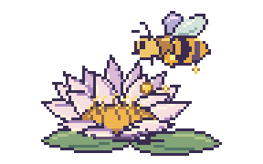
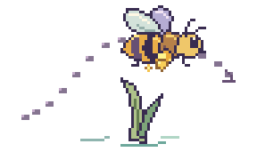
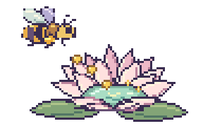

找到散粉花
空手时落到金色花药上，沾取花粉。
柱头盘露在花心，表面蓄着液体。访花昆虫带来的花粉可以落在这里，此时本花的花药还未成熟。
柱头盘变干，内圈花丝向内下弯，成熟的花药伸到柱头上方。昆虫来访时，花粉就能沾上它的身体。
携粉昆虫飞向另一朵刚开放的睡莲，让花粉落在湿润的柱头上。收粉和散粉错开，减少了同一朵花给自己授粉的机会。

空手时落到金色花药上，沾取花粉。

按空格振翅，松开缓降。避开花茎、水面和飞鸟。

带粉后，找花心湿润、没有蜜蜂的另一朵花。
白睡莲第二天内圈雄蕊下弯的动作来自逐日花期观察。剖面中省略了部分雄蕊，花粉颗粒经过放大。van der Velde，1986，第 111 页 ↗
荷兰睡莲科花朵的野外调查记录了访花昆虫。游戏用蜜蜂模拟传粉过程，有蜂占用的花是游戏中的避让规则。van der Velde 等，1978，第 429 页 ↗